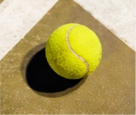

Weekend Open
109° 47’28” – 110° 8’20” BT
EST.98
Join the Community
Join weekly sessions, compete in friendly tournaments, or simply enjoy more time on court with people who love tennis as much as you do.

109° 47’28” – 110° 8’20” BT
EST.98
Join weekly sessions, compete in friendly tournaments, or simply enjoy more time on court with people who love tennis as much as you do.